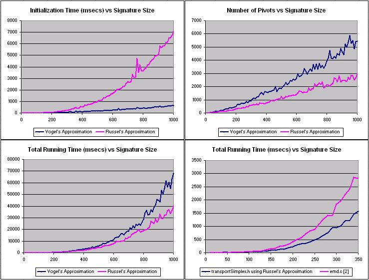

C++ implementation of the transportation simplex algorithm
The transporation problem is the task of computing the minimum cost required to transport goods from a set of Source nodes to a set of Sink nodes along a bipartite transportation network. To formulate the problem, we must know the supply at each Source, the demand at each sink, and the unit cost of transporting goods from each Source to each Sink.
If the cost of transporting good from each Source to each Sink is linear in the number of goods transported, the problem can be solved using linear programming. The code contained in this site solves the transportation problem using the transportation simplex algorithm as described in Hillier and Leiberman [1].
The Transportation Problem is used in network analysis, operations research, and in the Earth Mover's Distance, a metric for comparing distributions.
The package contains only a header file. The additional file shows example usage.
Header file: transportSimplex.h
Example code: main.cpp
The objective of publishing this code is to make a high-quality, high-speed algorithm available freely and promote the use of the Earth Mover's Distance (EMD) in image processing [3].
The interface and data structures used in this release were adapted from Yossi Rubner's emd.c [2].
The main routine is:
template <class TF>
double transportSimplex(TsSignature <TF> *signature1, TsSignature<TF> *signature2,
double (*grndDist)(TF *, TF *), TsFlow *flowTable = NULL, int *flowSize = NULL);
The function returns the total transportation cost. Signature1 and Signature2 are the Source and Sink sets (the operation is commutative). Each signature contains an array of features (the TF type) and an array of their respective positive non-zero supply or demand. The signature type is defined as
template <class TF>
class TsSignature {
public:
int n; // Number of features in the signature
TF *features; // Pointer to the features vector
double *weights; // Pointer to the weights of the features
TsSignature(int nin, TF *fin, double * win):n(nin), features(fin), weights(win){};
};
grndDist is a pointer to a function which computes the distance between two features. The function take a pointer to a source and a pointer to a sink as arguments and return a positive non-zero cost.
Finally, flowTable is an output parameter which can be set to an array that will be filled with the final flow amounts. The array must be of size Signature1->n + Signature2->n - 1 . FlowSize is a pointer to an integer which indicates the number of functional entries in Flow, because all spaces are not necessarily used. Flow and FlowSize can be set to NULL (or omitted) if this information is not important. The flow type is defined as:
typedef struct TsFlow {
int from; // Feature number in signature 1
int to; // Feature number in signature 2
double amount; // Amount of flow
} TsFlow;
Here, from indexes the feature in signature 1, to indexes the feature in signature 2, and amount specifies the amount of flow between the two features.
The data types and functions of this package are declared under the namespace dt_simplex.
However since there are very few names and they are named distinctly, it should be safe to include the namespace
in user code as follows:
using namespace dt_simplex;
transportSimplex throws two errors, which are of type TsError. If the error is TsErrBadAlloc, there is not enough heap memory to run the algorithm. If the error is TsErrBadInput, there is either a negative signature weight or a negative cost was found.
See the example file, main.cpp, for example usage.
Initialization The basic feasible solution can be computed using either Russel's or Vogel's approximation methods [1]. Both routines were included in order that they could be compared directly. In most cases Russel's method yeilds a better initial solution, though it takes longer than Vogel's method (finding the next entering variable in Russel's method is in O(n1 * n2), and in O(n1 + n2) for Vogel's method). However, Russel's method normally has a lesser total running time because less pivots are required to reach the optimum for all but small problem sizes (n1 + n2 =~ 20). Russel's method is used by default, but can be easily swapped at line ~200 in transportSimplex.h.
Running Time - The resources required to run this program depend on the number of sources (n1) and sinks (n2). The relative performance of the algorithm (using both Vogel's and Russel's Approximations) as a function of problem size is illustrated in the charts below. These tests use identical sized source and sink signatures which were derived from digital image colour histograms. The top left chart shows the asymptotical speed advantage of Vogel's initialization. However, the better quality of Russel's initialization results in less pivots (upper right) and less total time (lower left) required to reach the optimum.
The lower right chart shows the performance of transportSimplex.h compared to emd.c [2], a transport simplex implementation which is often used to compute the Earth Mover's Distance by image processing researchers. Problems having more than 350 sources and sinks would cause a stack overflow error in emd.c

Memory Requirements - Memory for this program is allocated dynamically so that n1 and n2 do not need to be known at compile time. The largest data item is the cost matrix _tsC, which stores the precomputed costs between each source and sink and has size n1 * n2.
[1] F. S. Hillier and Gerald J. Leiberman, Introduction to Operations Research, 5ed. McGraw-Hill, 1990.
[2] Y. Rubner, "Code for the Earth Mover's Distance (EMD)," 1998, http://vision.stanford.edu/~rubner/emd/.
[3] Y. Rubner and C. Tomasi. Perceptual Metrics for Image Database Navigation. Kluwer Academic Publishers, Boston, December 2000.